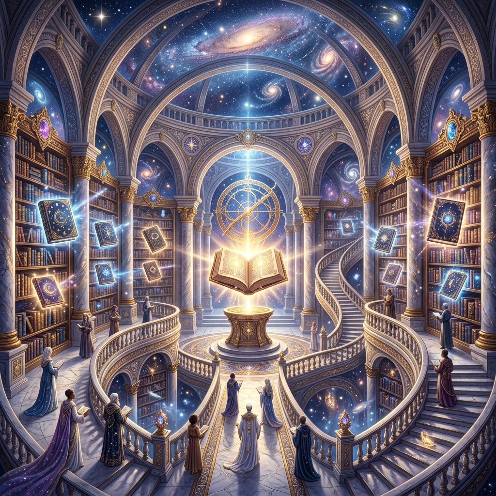

Access the ethereal database of your soul's entire journey. Receive high-frequency cosmic guidance regarding your purpose, relationships, and ultimate destiny.
The Akashic Records are an energetic, vibrational archive containing the history of every soul and its journey across lifetimes. It is often described as the "Book of Life" or a cosmic library where all thoughts, words, emotions, and actions generated by your soul are recorded.
An Akashic Records reading is a sacred transmission of guidance and wisdom. By opening your personal Records, we communicate with your Guides, Ascended Masters, and Teachers to retrieve specific answers to your most profound questions regarding your life purpose, soul contracts, and energetic blueprint.
You feel disconnected from your true calling and want to understand the overarching mission of your soul in this lifetime.
You are at a significant crossroads in your career, relationships, or geographic location and need divine clarity.
You want to understand the spiritual agreements you made with family members, romantic partners, or close friends before incarnating.
You feel blocked or stagnant despite doing the earthly work, indicating a need for higher-level spiritual intervention.
Before the session, you will be asked to prepare specific, open-ended questions (e.g., "What is the lesson I am meant to learn from this relationship?"). During the session, Neelam will use a sacred prayer to open your specific Records, acting as a clear channel for the information to flow through.
We will then have an interactive conversation with your Guides. You will receive direct, loving, and highly practical guidance regarding your questions. The energy of the Records is deeply healing in itself, often leaving clients feeling lighter, validated, and profoundly peaceful.
The Records reveal possibilities and probabilities based on your current trajectory. Because you have free will, the future is never entirely fixed. The guidance focuses on empowerment in the present moment.
Open-ended questions starting with What, Why, or How are best. Avoid Yes/No questions or questions predicting exact timing (When), as time is non-linear in the spiritual realm.
Absolutely. The Akashic Records are a dimension of pure Light and unconditional Love. No lower vibrational energies exist there. You will only receive information that is for your highest good.
Take the next step toward clarity and healing.